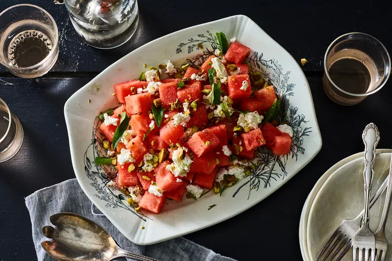

Watermelon and Goat Cheese Salad Recipe

Description
This is a watermelon and goat cheese salad with a verbena infused vinaigrette. It is refreshing
and a perfect dish for the summer.
Ingredients
- 1/2 cup extra virgin olive oil
- 1 handful fresh verbena Leaves
- 1 teaspoon coarse salt
- 1/2 seedless watermelon
- 1/2 pound fresh goat cheese
- 1/2 cup unsalted pistachios
- 2 tablespoons red vine vinegar
- 1 teaspoon Maldon Sea Salt
- 1 dash fresh pepper
Steps
- Roughly chop the verbena and place in a mortar and add the olive oil and the coarse salt.
Grind for about 10 minutes and let it sit for about 1 hour at room temperature.
- Cut the watermelon into cube and place in a salad bowl in the refrigerator.
- Place the pistachios in a pan and on low heat toast them for 5 minutes.
- Remove the pistachios from the pan and chop them roughly. Set aside in a small bowl.
- Crumble the goat cheese.
- Take the olive oil and verbena mix and put it through a small mixer. When completely mixed
add the vinegar. Mix again.
- Take the watermelon out of the fridge, add the goat cheese, drizzle the vinaigrette,
sprinkle the pistachios and finish with Maldon sea salt and pepper. Mix and serve!
If you want to see the original recipe click here.